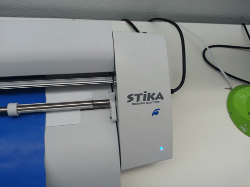
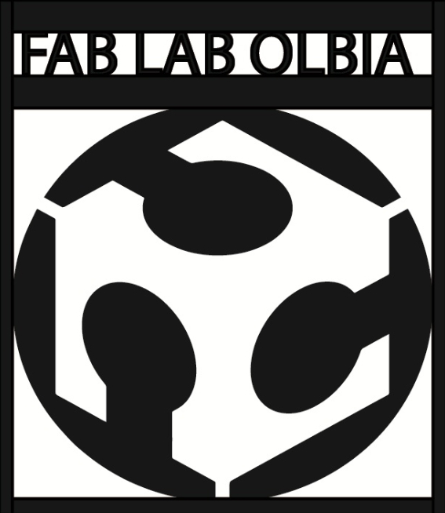
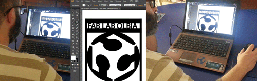
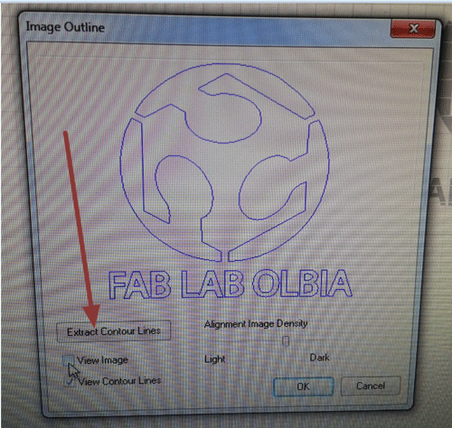
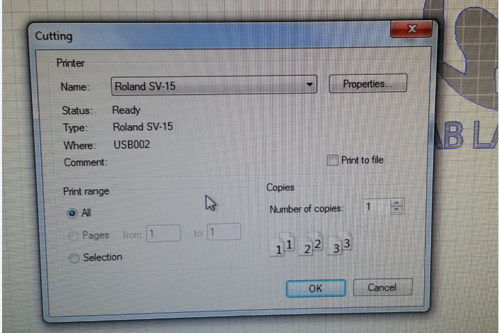
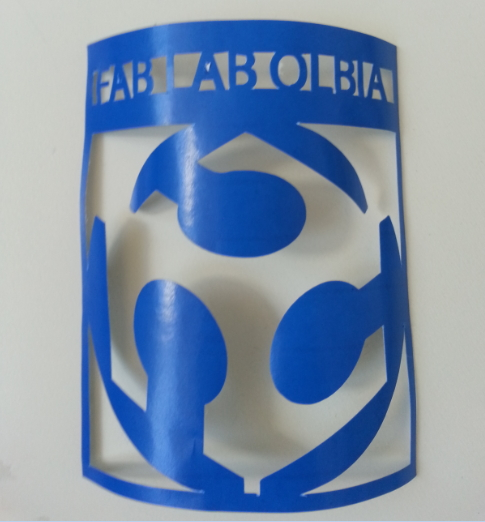

Computer-controlled cutting
.
The weekly assignment focuses on computer-controlled cutting. The first part of the description refers to the LASER CUTTER: a lamp will be designed using different software approaches and realized by means of a laser cutter. The second part refers to the VINYL CUTTER: a sticker will be designed and realized.
Part ONE: the LASER CUTTER and the "press-fit construction kit". The kit is basically composed of single parts that must be fitted together just by pressure: no glue, no screws, no bolts !

I started from the beginning with the idea to design a simple lamp, derived from a 360° revolve of polyline.One of the most basic design procedure ever. In reality this kind of design it’s not so easy: you have to take into account the present of light bulbs, their dimensions, how do they fit into the lamp, the presence of cables and so on.

Considering that I have to use paper board, I need to find an easy way to connect different slices. At the beginning I start using a free Grasshopper for Rhinoceros( https://www.rhino3d.com/, http://www.grasshopper3d.com/) definition, that was great (fast slicing and fast slice positioning on a plane) but it can only perform planar slicing, and that was not suitable for my lamp.

Then I import my shape into Autodesk 123D MAKE (http://www.123dapp.com/make) , that easily let you choose your type of slicing, angles, user paper and let you export your automatically created slices into a DXF file. Please note that all the design data are visible in the figure (number of slices, thickness, etc.)

My slices are ready. At this moment of the assignment, considering the lamp too small if compared to the paper size, I commit a great mistake: I scale the drawing with a factor: 3. I did not immediately realize the consequences.

The VREL laser cutter (http://www.vrel.it/) is waiting for me !

The VREL laser need several steps to start: air, exhaust, etc. . I don’t really like the procedure: you have to fix cardboard to the grid using adhesive tape ! It’s very boring. After a first test with adhesive tape we decide to use magnets to fix cardboard. It's an incredibly faster solution.

The DXF file is transformed into G-Code and then sent to the machine. Please note that both layers (text layer in red and cut layer in blu) are set to CUT, but in the first case the laser power is considerably lower (approximately 30%). Thus, text will be realized by a very light cut.

Despite the above mentioned problems, when it starts cutting, it’s a great experience. You should stay always close to the machine, it’s very dangerous to leave the laser working alone.

After a few minutes, I immediately note that the distance (named S) is too big. Note that it should be equal to the thickness of the paper… scaling 3 times the DXF produce a 3 times bigger S !

The error was fatal. Parts are no longer useful…

Let’s see the positive side !!! I try a second version of the lamp, coming back to the original scale and cutting it again !!!

Now the scale is correct, and all the parts fits together with a little pressure. I have used just one panel of cardboard, so, step by step, I start noticing that the mentioned parts are quite small and there's not enough space at the lamp interior to insert the hand and fix all the radial slices. SO, one of the future update will be the correct scaling (at least 2 times bigger).
LAMP CUTTING from antonio burrai on Vimeo.
Despite the dimensions, I could complete the lamp and test it in the final version. Enjoy the video !
Part TWO: the VINYL CUTTER


In the picture you can see the logo of the Fab Lab Olbia. This will be the starting point of my vinyl cutting. The JPG file has been inported into the STIKA.

FINAL CONSIDERATION BEFORE/DURING CUTTING. At the beginning, prior to cutting, I started using Adobe Illustator, it'a very complete program with tons of features, but sometimes it's too RAM consuming even with basic command. I've switched to Adobe Photoshop and to Microsoft Paint for fast changes.

Once inported the JPG file, you just need to extract the lynes, that will be concretely the route that the STIKA will cut in the coloured paper.

As you can infer from the figure, is almost equivalent to a normal printer. Just press the command CUTTING and send to the printer your own logo.

This is the final result !
Design files download area
The following files are downloadable:
| Type of file |
Description |
Link (Type of file) |
| Fabrication files: vectors(s) / 3D model(s)- Laser cutting |
Grasshopper file (slicer) |
(ghx) |
| Fabrication files: vectors(s) / 3D model(s)- Laser cutting |
Rhinoceros file |
(3dm) |
| Fabrication files: vectors(s) / 3D model(s)- Laser cutting |
123D Make file |
(3dmk) |
| Fabrication files: vectors(s) / 3D model(s)- Laser cutting |
AutoCAD file |
(dxf) |
| Fabrication files: vectors(s) / 3D model(s)- Vinyl cutting |
Image file (FabLab Olbia logo) |
(bmp) |
| Fabrication files: vectors(s) / 3D model(s)- Vinyl cutting |
Photoshop file (FabLab Olbia logo) |
(psd) |